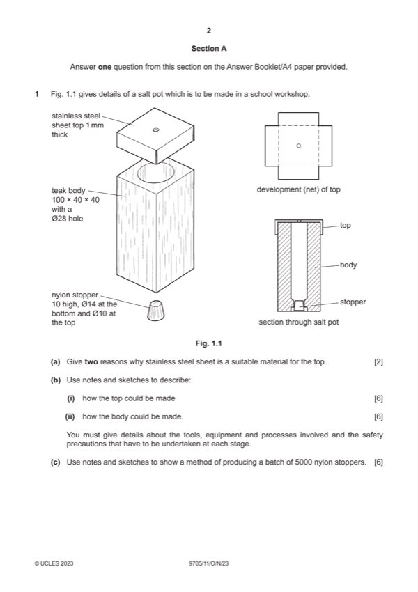

Question 1

Original paper page 2
Part 1(a) — solution
- hardwearing and long lasting
Mark points
- hardwearing and long lasting
Part 1(b)(i) — solution
Sketches and/or notes show: 6 Accept CNC methods.
Method of making the top of the salt pot
Suitable method [0–3] e.g. mark out, cut out and fold with hand
tools.
Tools, equipment or processes
Suitable method [0–2] snips, coping saw, file, folding bars
Safety precaution [0–1]
0–6
Mark points
- Include the ideas shown in the solution above.
Part 1(b)(ii) — solution
Method of making the body of the salt pot 6 Accept CNC methods.
Suitable method [0–3] e.g. drilling the centre out on a lathe.
Tools, equipment or processes
Suitable method [0–2] 4 jaw chuck
Safety precaution [0–1]
0–6
Mark points
- Include the ideas shown in the solution above.
Part 1(c) — solution
Sketches and/or notes show: 6 Accept 3D Printing
Method of making 5000 of the stopper
Suitable method [0–3] e.g. injection moulding.
Tools, equipment or processes [0–3]
0–6
2023 Page 4 of 17
9705/11 Cambridge International AS & A Level – Mark Scheme October/November 2023
Guidance
Mark points
- Include the ideas shown in the solution above.